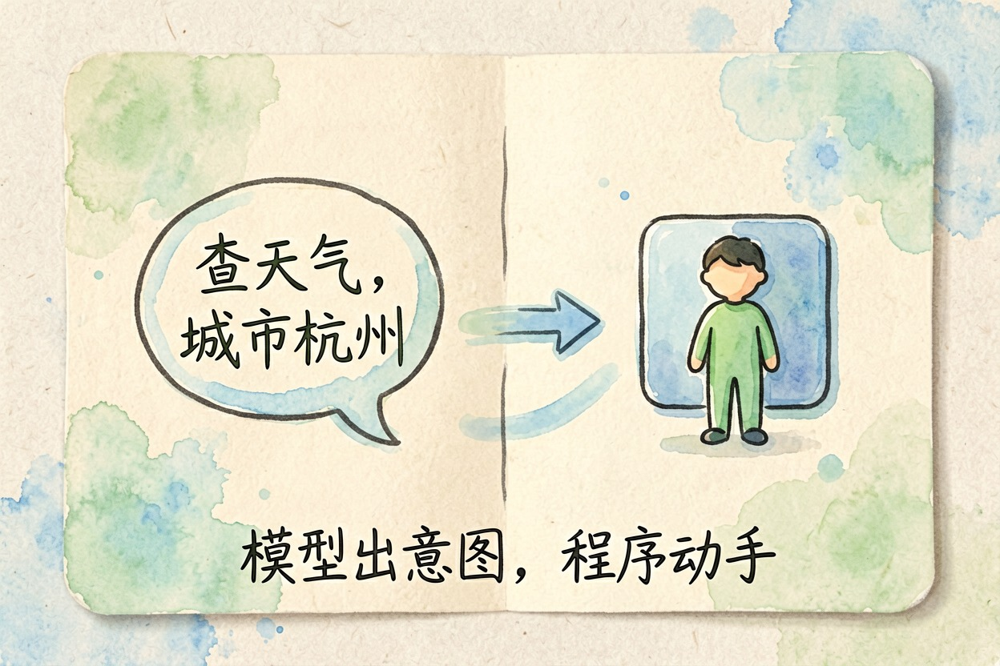
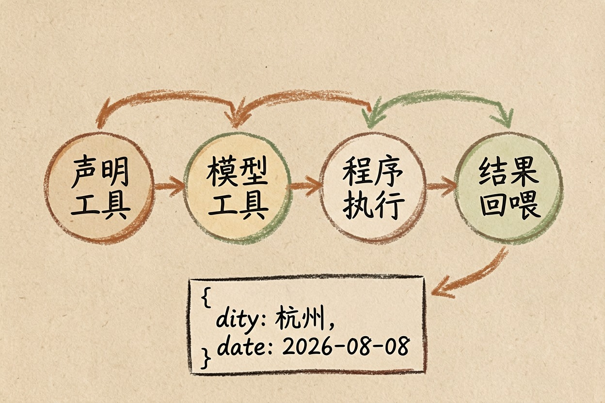
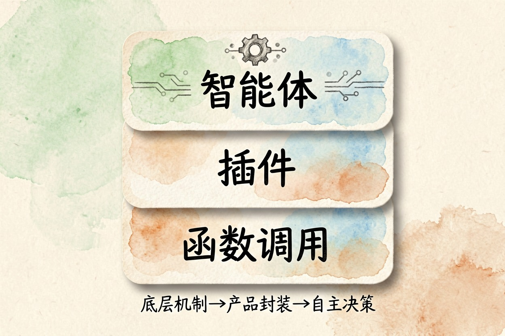

什么是工具调用？AI 怎么学会用外部工具 — Learntide
模型自己不会查天气，也不会发邮件。它只会写一张单子交出去，剩下的活由程序接手完成。
什么是 function calling：模型只负责下单

什么是 function calling？中文一般译成函数调用或者工具调用。它指的是模型判断这句话该用哪个外部功能、该填什么参数，然后把这份意图交给程序去执行。
关键在于分工。模型出意图，程序动手。它不亲自联网，也不亲自读文件，它只会说：请调用查天气这个功能，城市填杭州。
一次完整的调用长什么样

流程分四步。开发者先把可用工具告诉模型，包括名字、用途和参数格式。用户提问后，模型判断要不要用工具、用哪一个。
程序拿到这份意图去真正执行，把结果回喂给模型。模型再把结果翻译成人话讲给你听。
{
"name": "get_weather",
"arguments": { "city": "杭州", "date": "2026-08-08" }
}这段就是模型吐出来的那张单子。它本身不是答案，只是一张待执行的凭据。执行成功与否、数据准不准，跟模型没关系。
值得留意的是第四步。结果回喂之后，模型可能判断信息还不够，于是再下一张单子。这一来一回可以重复好几轮，直到它认为能收尾了为止。
函数调用是什么意思，和联网搜索的关系
你在对话框里看到的联网搜索，多数就是这套机制的一种包装。搜索被写成一个工具，模型觉得需要就调，不需要就直接答。
同理还有画图、跑代码、读取文档。表面上功能各不相同，底下都是同一套「声明工具、模型挑、程序跑、结果回喂」。
理解这一层，不少现象就说得通了。比如模型明明开着联网却不去搜，那多半是它判断这题不必搜。
还有一种情况容易混。检索资料走的是另一条路，系统先把相关段落查出来拼进提问里，模型全程并不知道自己用了工具。两者能配合，机制却不一样。
工具调用和插件的关系

插件是这套能力的产品化外壳。平台把一组功能打包，配上说明和权限开关，用户点一下就能启用，看不到底层那张单子。
三者的层次可以这么排：函数调用是底层机制，插件是给普通用户的封装，智能体则在上面再加一层自主决策，让模型自己决定连续调几次、什么时候收工。
没有这层能力，模型就只能说话，干不了活。它能不能真正替你办事，分水岭就在这里。
别指望它永远选对工具
常见的翻车有三类。一是该调不调，模型凭记忆自信作答；二是不该调乱调，一句闲聊也去搜一圈，慢且费钱；三是参数填错，日期差一天、单位对不上、城市写成了拼音。
工具描述写得含糊，这三类都更容易发生。名字、用途、参数说明写清楚，比在提示词里反复叮嘱管用得多。
还有一条：工具执行失败时，要给模型一条明确的错误信息。收到空结果它容易顺着往下编，看起来还挺像回事。
别让它对着空结果自由发挥，这是弄懂什么是 function calling 之后最该守住的一条。
本文信息核对于 2026-08-08。AI 产品的价格、免费额度与功能变动频繁，实际以各工具官网当前说明为准。